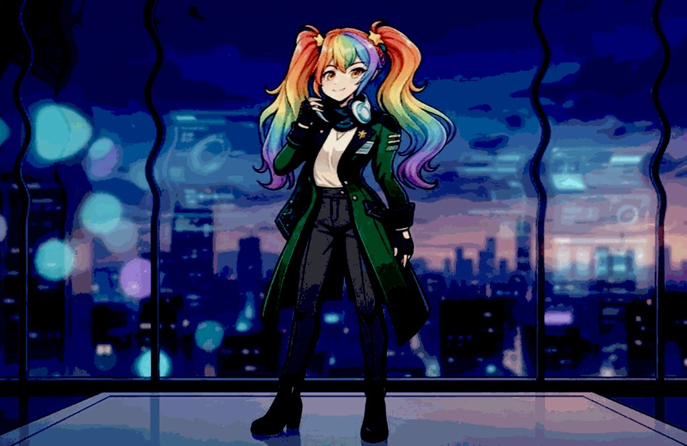

Companion, not a billboard
Janet is the face of an ecosystem: local models, constitutional guardrails, and tools that stay on your side of the glass.
Accessibility + Privacy =
Accessibility plus privacy equals a win.
Built in — not bolted on.
No cap — on JANET.
Your voice-first, offline-capable companion — built for privacy, clarity, and joy across devices and (one day) a full OS.

A short screen capture — same energy as the new rainbow look.
Janet is the face of an ecosystem: local models, constitutional guardrails, and tools that stay on your side of the glass.
Wake words, natural conversation, and interfaces that work when your hands are full — from Mac to iPhone to what comes next.
GPL/MIT across the stack where it matters. Fork it, run it offline, make it yours.
Neural Engine, Ollama, cluster — your AI should survive airplane mode.
Cluster-only, no surveillance business model. Your conversations aren’t the product.
Explicit axioms and safety rails — so alignment is documented, not implied.
This page is a lightweight home for the mascot and the story. Wire your domain (e.g. janet.heyjanet.org or a path under heyjanet.org) when you are ready to go live — see README.md in this folder.